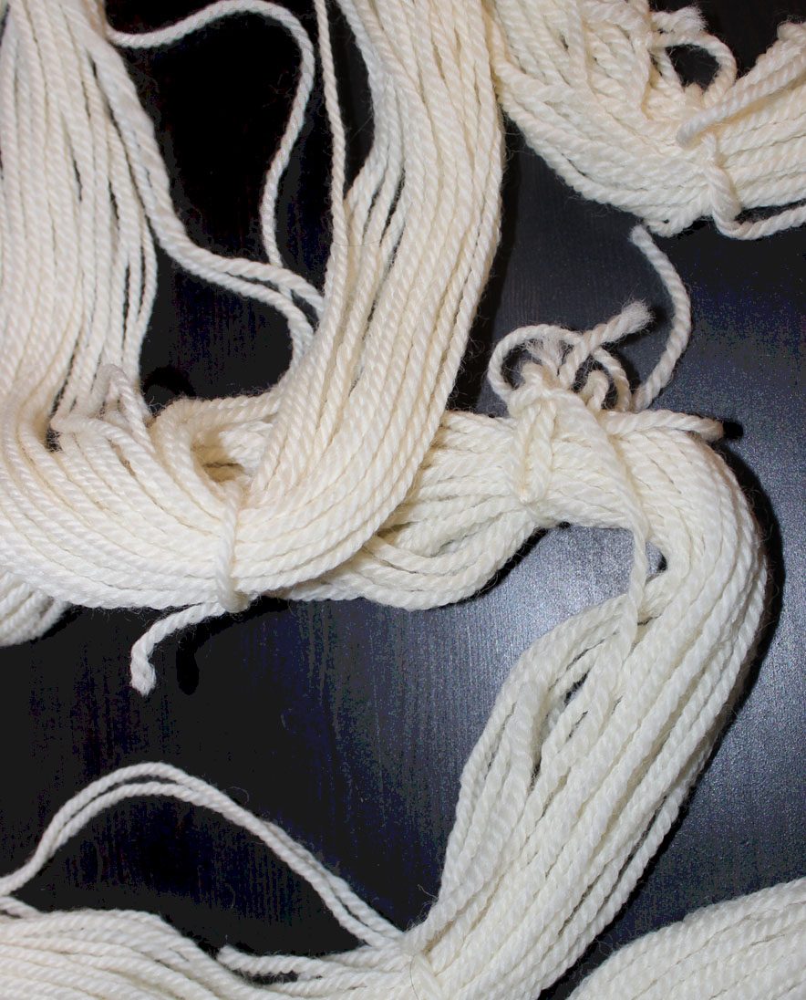
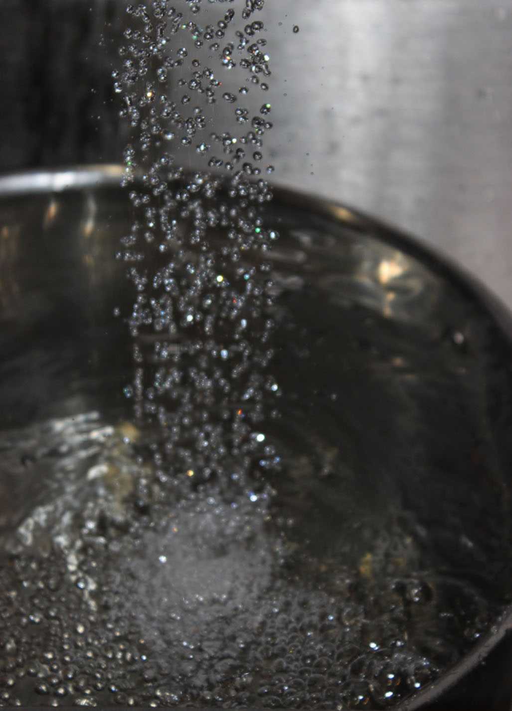
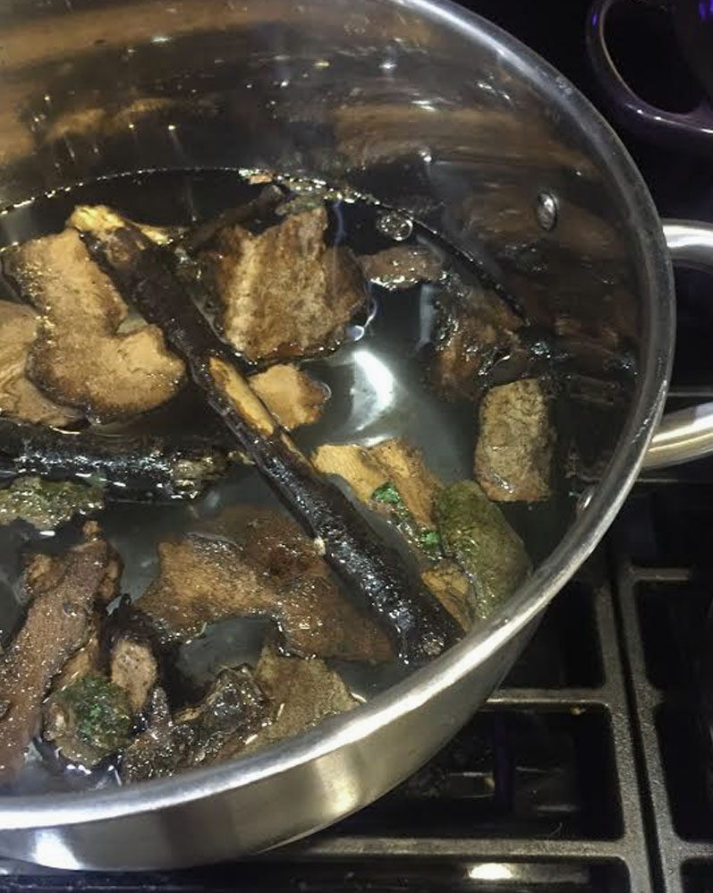
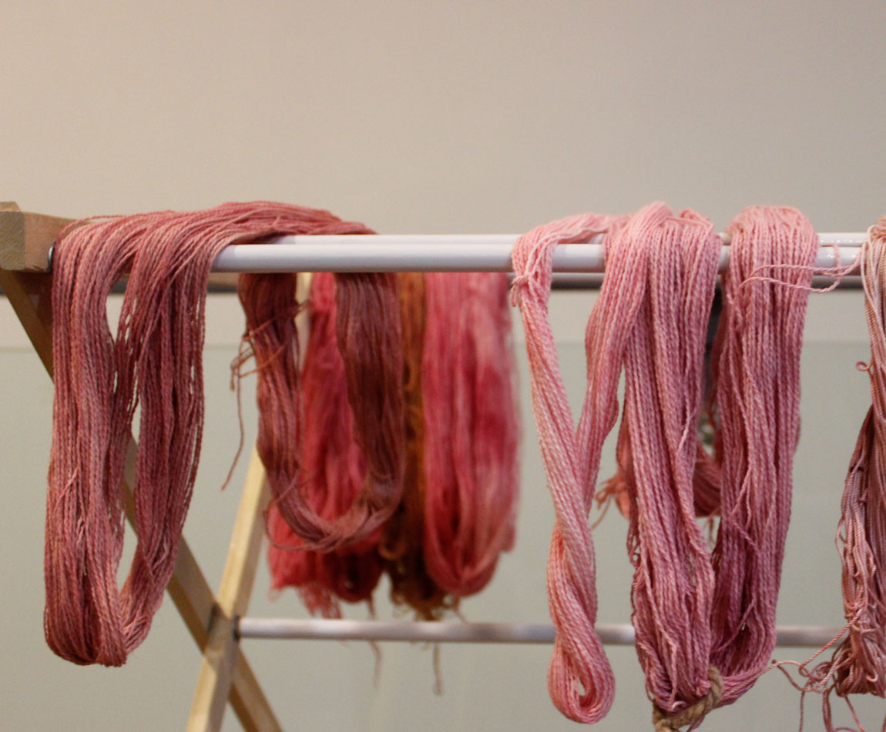
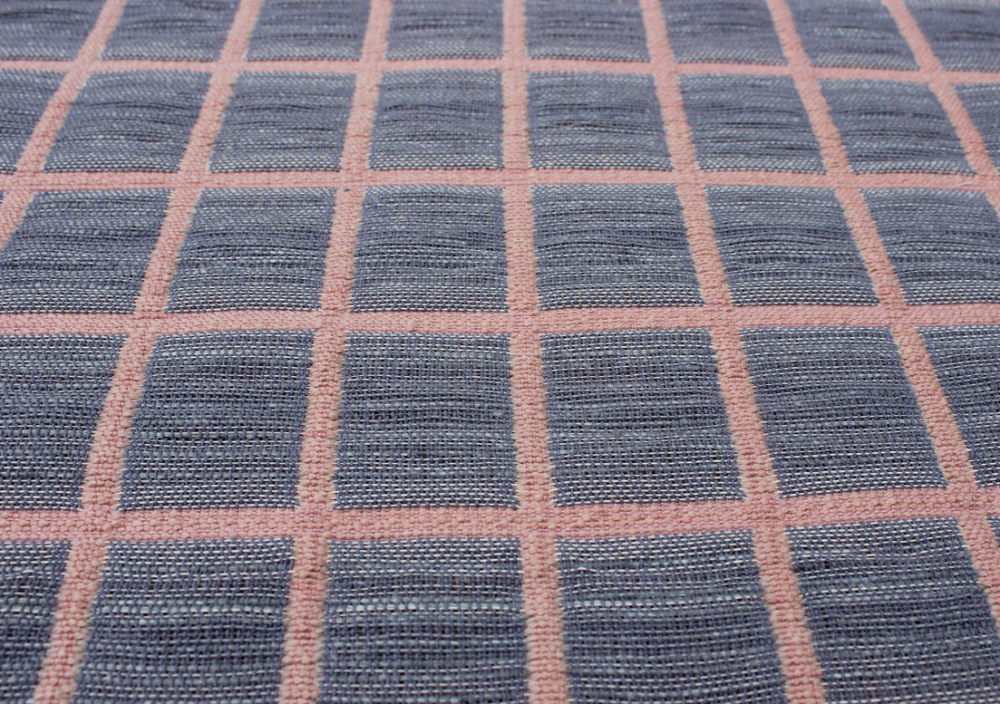
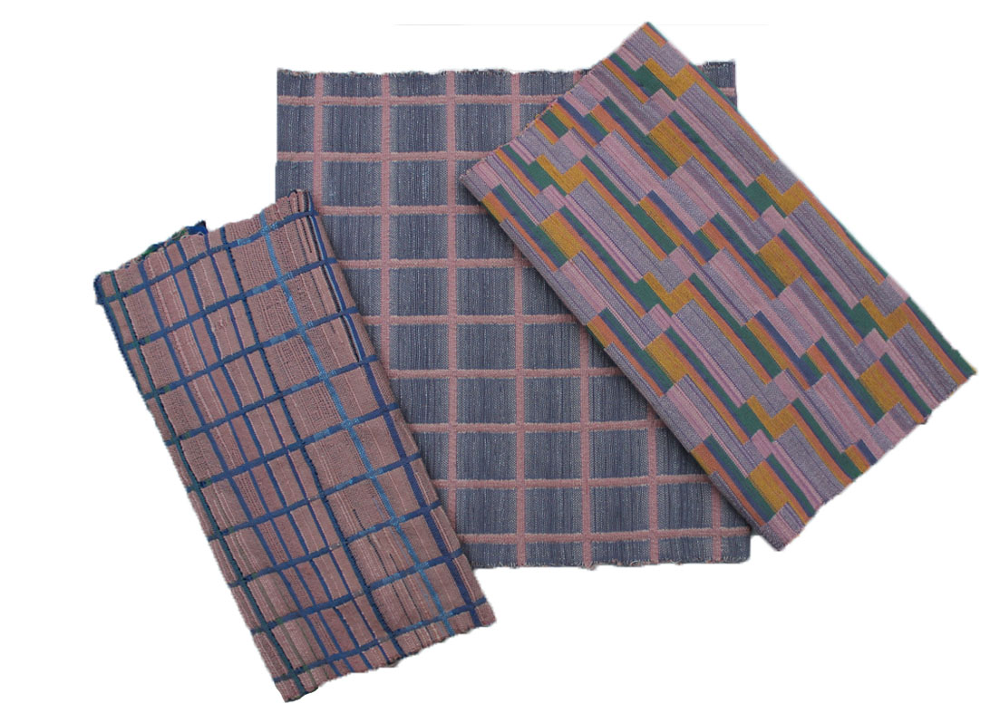

Examining the process and influence of naturally dyed yarns in textile design.
The first of many steps in creating naturally dyed yarn is to create skeins of yarn that will easily take in the dye bath. Skein= wrapped yarn secured by other yarns
(skeins)
Creating a mordant allows the dye to adhere to the fiber. The mordant can consist of items that have high amounts of tannin like bark and acorns.
There are different types of mordant resulting in a variety of shades.
By soaking the yarns they become absorbent and porous.
This pink yarn is dyed using Cochineal.  Cochineal= insect that live on Prickly Pear cactuses.
The pink yarns are all created with Cochineal dyes. The other colors are created using commercial synthetic methods.  Combined they create a balanced palette.
